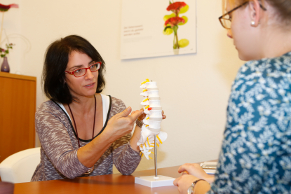
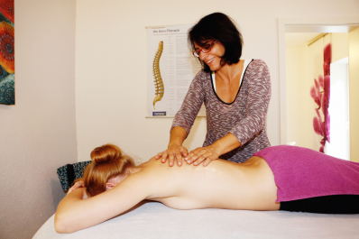
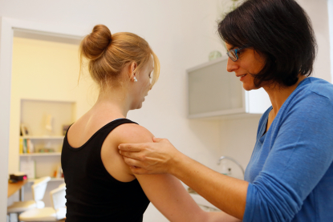
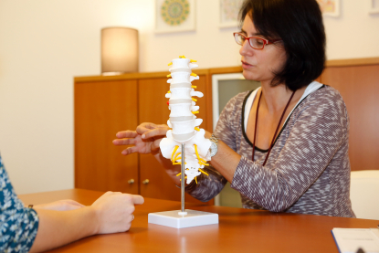

Dorntherapie
Die nach ihm benannte Dorntherapie geht zurück auf den Allgäuer Volksheiler Dieter Dorn im Jahr 1975. Er erfuhr Linderung am eigenen Körper und entwickelte daraus die sehr erfolgreiche Behandlung.
Schon geringfügig fehlstehende Wirbelkörper üben Druck auf die umliegenden Nerven und die sie versorgten Organsysteme aus. Dadurch kann es zu zahlreichen Symptomen wie Ischialgien, Schwindel, Kopfschmerzen, Empfindungsstörungen in Armen und Beinen kommen. Häufig wird vom Betroffenen auch zunächst lediglich die Muskelverspannung und die damit verbundene eingeschränkte Beweglichkeit wahrgenommen. Alle diese Beschwerden sind eine Indikation zur Anwendung der Dorntherapie.
Nach der Voruntersuchung werden sogenannte blockierte Wirbel durch den Behandler fixiert, während der Patient durch seine Eigenbewegung die Reposition des Wirbels unterstützt. Diese Methode ist sowohl für Bänder und Sehnen als auch für die Bandscheiben durch den fliessenden und sanften Vorgang gut verträglich.
Die Dorntherapie beinhaltet als manuelle Therapie auch Teile der traditionellen chinesischen Medizin (TCM). Es entsteht ein positiver Einfluß auf die inneren Organe und die Psyche.

Breuss-Massage
Bei der Breuss-Massage handelt es sich um eine energetisch manuelle Therapie, welche häufig in Verbindung mit der Dorntherapie angewandt wird. Die Wirbelsäule wird durch spezielle Techniken sanft gestreckt und durch den entstehenden Raum werden die Zwischenwirbelscheiben „belüftet“. Die Regeneration der Bandscheiben wird unterstützt durch das zur Massage verwendete Johanniskrautöl.
Neben der rein körperlichen Wirkung hilft die Breuss-Massage auch bei nervösen Zuständen, Erschöpfung und Anstrengung, da das Johanniskrautöl eine positive Wirkung hat.
Die Breuss-Massage unterstützt vor der Dorn-Behandlung die Lockerung der Rückenmuskulatur; nach der Dorn-Behandlung angewandt dient sie der Stabilisierung.

Skribben
Gerade beim Skribben handelt es sich um eine traditionelle manuelle Therapie, die jahrelang in Vergessenheit geraten war. Das Skribben entspricht der Tradition von mitteleuropäischen Sehnensetzern und Knochenbrechern; es ist in seiner Behandlungsform auch unter anderen Namen, z.B. sanfte Chiropraktik nach Marienhoff, zu finden.
Wieder aufgelebt und unter dem Namen Skribben erneut verbreitet wurde die Behandlung dank des sehr aktiven Arztes Dr. Klaus Karsch aus dem Allgäu. Er belebte aufgrund seines Engagements die alte Technik neu. Seitdem verfügen wir in Deutschland über eine sehr gute Alternativbehandlung bei Gelenksbeschwerden wie z.B. Arthrose, Schulterschmerzen, Hüft- und Knieprobleme, um nur einige zu nennen.

Wirbelsäulen-Meridian-Balance
Auslöser für immer wiederkehrende Beschwerden können im Ist-Zustand des Individuums liegen. Damit ist eine Kombination aus körperlichem und seelisch-geistigem Befinden gemeint. Hier greift die Wirbelsäulen-Meridian-Balance als ausgleichende Therapie ein.
Gegründet ist die Therapieform auf den Erkenntnissen des berühmtesten chinesischen Arztes Hua Tuo (ca. 180-250 n.Chr.) und der nach ihm benannten Akupunktur-Punkte. In Verbindung gebracht mit modernen Beschwerden kann die Wirbelsäulen-Meridian-Balance durch Stimulation des betroffenen Hua Tuo-Punktes begleitet durcht fördernden Bewegungen auch wiederkehrende Symptome behandeln.
In der Wirbelsäulen-Meridian-Balance wird ein Ausgleich der körperlichen Beschwerden durch Akupressur und, durch die dem Tai Chi entlehnten Bewegungen, eine ganzheitliche Gesundung durch das wieder fließende Chi (chin. Lebensenergie) angestrebt.